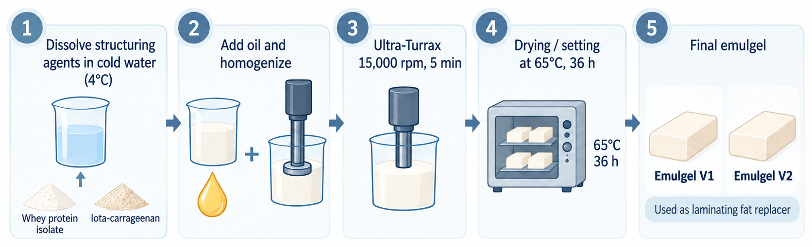
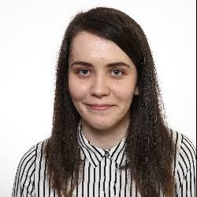
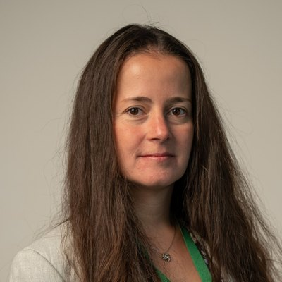
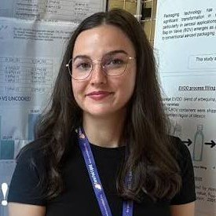
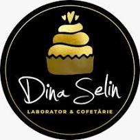
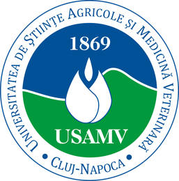
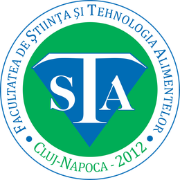

The hardest dough to reformulate
Puff pastry and croissant dough are among the most demanding matrices for fat reduction. The laminating fat is not only a nutritional component: it separates the dough sheets, holds the layers apart during baking and produces the volume, flakiness and honeycomb crumb of a good croissant. Conventional laminating fats deliver this performance at the cost of a high saturated-fat content.
Emulgels are emulsions whose continuous phase is gelled. PRO-OLEOGEL structures sunflower oil, rich in unsaturated fatty acids, with whey protein isolate and ι-carrageenan into a plastic, sheetable fat replacer with a lower fat content than conventional laminating fats. Sourdough (maia) replaces part of the commercial yeast, adding flavour and making use of a traditional, low-cost fermentation.
The research is carried out by a team from the Faculty of Food Science and Technology at USAMV Cluj-Napoca and adapted to the production capacity of Dina Selin Sweets, an artisanal pastry and confectionery workshop in Dej.
Saturated fat, relative to the conventional croissant
How the emulgel is made

What we set out to do
Reduced-fat croissants that keep the layered structure, volume and texture of the classic product, with an improved lipid profile and a sustainable, locally sourced formulation.
Emulgels as laminating-fat replacers
Producing protein–oil emulgels from sunflower oil, whey protein isolate and ι-carrageenan, and characterising their viscoelastic behaviour, structure and thermal stability to select the formulation best suited to lamination and baking.
Reduced-fat croissant recipe
Reformulating the laminated dough with emulgel and sourdough, and adapting kneading, fermentation, folding and baking parameters to the product and to the beneficiary's production conditions.
Quality and safety of the finished product
Proximate composition, sugars and organic acids (HPLC-RID), lipid profile and volatile compounds (GC-MS), rheology and texture profile analysis, yeasts and moulds, and consumer evaluation by hedonic and JAR tests, compared with conventional croissants.
Sustainability and transfer
A screening life cycle assessment against the conventional product, an analysis of fit with circular-economy principles, and technological recommendations and good-practice guides for Dina Selin.
From the gel to the pastry counter in 6 months
- Weeks 1–6
Emulgel development
Producing and characterising protein–oil emulgels; selecting the formulation for lamination.
- Weeks 6–13
Croissant reformulation
Laminated dough with emulgel and sourdough; optimising folding, fermentation and baking.
- Weeks 14–21
Characterisation and evaluation
Physico-chemical, rheological, textural, microbiological and sensory analyses.
- Weeks 20–24
Sustainability and transfer
Screening LCA, circular-economy assessment, and know-how transfer to the beneficiary.
Photographs of the emulgels and of the project's croissant batches will be added as the work progresses.
What the project leaves behind
- an optimised protein–oil emulgel formulation validated as a laminating fat for croissant dough;
- a technological recipe for reduced-fat croissants with sourdough;
- a comparative quality report (physico-chemical, rheological, microbiological and sensory) against the control product;
- a product technical sheet, nutritional profile per 100 g, storage conditions and a HACCP plan for the production flow;
- a sustainability and circular-economy report, including a screening LCA;
- technological recommendations and good-practice guides for Dina Selin, and preliminary documentation for a possible patent application.
Results obtained: public summary, at project end
Dissemination: articles, conference papers, events
The researchers
Four researchers from the Faculty of Food Science and Technology, USAMV Cluj-Napoca, working in food biotechnology, lipid science, rheology and food safety.

Dr. Călina Cristina Ciont
Teaching Assistant at the Faculty of Food Science and Technology since 2024, with a PhD in Biotechnology (2025, summa cum laude) on iron oxide nanoparticles carried by probiotics. Before her doctorate she worked in quality control at FrieslandCampina in Cluj-Napoca. She is co-inventor on the OSIM patent application RO138194A2, has 24 published articles and an h-index of 10 (Web of Science), and is a member of the MSCA Staff Exchanges projects RIA4FOOD and FEEDACTIV.

Dr. Bernadette-Emőke Teleky
Scientific Researcher II, with doctorates in Mechanical Engineering (2016) and Biotechnology (2025, summa cum laude). Her expertise in the rheological characterisation of food systems (elastic and viscous moduli, yield points) supports the production and characterisation of the emulgels and the interpretation of the experimental data. She led the postdoctoral project Bio-Cycle and has authored more than 60 indexed publications.
Prof. Dr. Vlad Mureșan
Professor and Vice-Rector for Research at USAMV Cluj-Napoca. He works on lipid science and innovative lipid structures in foods, including oleogels and emulgels as functional replacers of saturated fats and their behaviour in bakery and pastry products, and has led research on reformulating fatty ingredients. h-index 29 (Google Scholar).

Anda Elena Tanislav
PhD candidate in Biotechnology at USAMV Cluj-Napoca since 2021, with degrees in food engineering. She works on structured lipids, their thermo-oxidative behaviour and their functionality in foods, and is a research assistant in the national young-teams project PN-IV-P2-2.1-TE-2023-1206 on structured edible lipid systems. She is first author of a 2024 study on fully replacing conventional fat with oleogel in five pastry products.
A pastry workshop and a university

Dina Selin · DINA SELIN SWEETS SRL
A family-run pastry and confectionery workshop in Dej, known locally for artisanal products: choux pastries, macarons, platters, savoury pastries, candy bars, custom and wedding cakes. It grew from a small business started in 2011 as Selin Dina Întreprindere Individuală.
Based on its 2024 financial statements, it ranked first in Top Profit România 2025 among food-industry micro-enterprises in Dej. Through this project it is extending its range towards premium pastry products with an improved nutritional profile.
Beneficiary lead: Cristina Selin


USAMV Cluj-Napoca
The University of Agricultural Sciences and Veterinary Medicine Cluj-Napoca, founded in 1869. The work is carried out at the Faculty of Food Science and Technology, with the university's own staff and research infrastructure, including HPLC, GC-MS, FTIR, rheometry and proximate-analysis equipment.
- Call
- PN-IV-INO-CI-2025-1
- Project code
- PN-IV-P7-7.1-CI-2025-0058
- Funding contract
- no. 13CI/2026
- Implementation period
- 6 July – 31 December 2026
- Total value
- 50,000 RON
- Public funding
- 45,000 RON
- Beneficiary contribution
- 5,000 RON
Get in touch
Dr. Călina Cristina Ciont
Faculty of Food Science and Technology, USAMV Cluj-Napoca
Calea Mănăștur 3–5, 400372 Cluj-Napoca, Romania